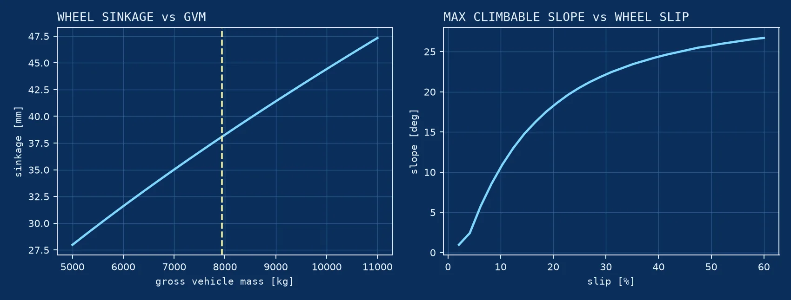
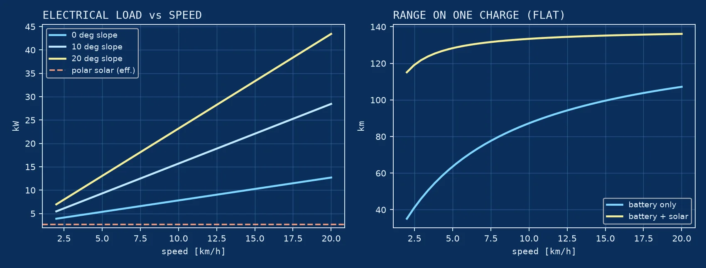
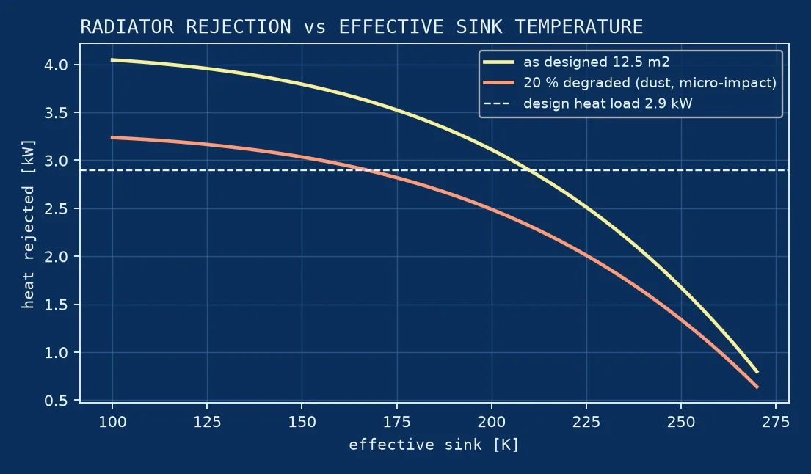
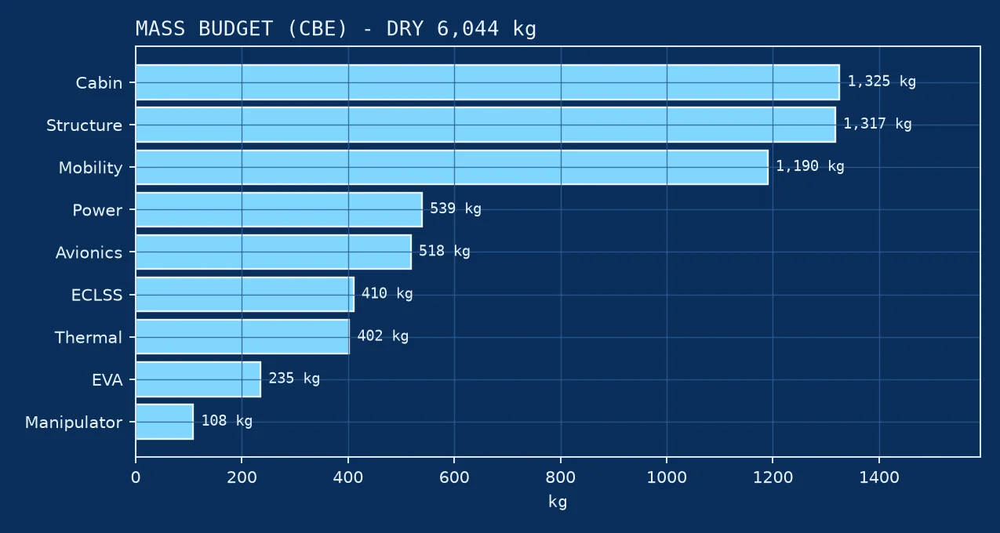

Pressurised crew rover for the lunar south pole. Six driven wheels, two crew, 15.5 m³ cabin, suit-port EVA. Drawn parametrically, published openly.
7.0 m long
4.7 m wide deployed
6,044 kg dry (CBE)
80 kWh Li-S
87–133 km range
Drag to orbit. Click any part. Try Explode and Section.
01 / Why this exists
A pressurised workhorse for the one place on the Moon everyone wants to go.
The lunar south pole holds permanently shadowed craters that may hold water ice, and rims that see the Sun for most of the year. Reaching both means long drives at grazing sun angles, crossing 20° slopes of fine regolith, and surviving a thermal range from about 120°C to below −230°C. Unpressurised buggies are designed for hours. A crew that must work for days needs a shirt-sleeve cabin, a way to leave and re-enter without cycling an airlock, and a vehicle that can limp home on any one failure.
TYCHO-6 is my attempt to answer that as one coherent machine: every number on this page traces to one parameter file, the CAD is generated from that file, and the analysis reads the CAD’s bill of materials. Change the wheel diameter and the drawings, mass, sinkage and range all move. It is a concept, not flight hardware. The whole package, STEP and STL files, drawings, calculations and manuals, is in an open repository.
02 / Specification
Design point
Geometry
Length (arm stowed)
7,005 mm
Width, over wheels / arrays deployed
3,380 / 4,725 mm
Height, roof / mast + HGA deployed
3,200 / 4,587 mm
Wheelbase / track
4,400 / 2,900 mm
Wheel
Ø1,200 × 480 mm
Ride height
480 nominal, 300–900 mm
Cabin
Ø2.2 m, 15.5 m³
Mass (first-order, CBE)
Dry mass
6,044 kg
Dry with 15 % growth
6,951 kg
Consumables
665 kg
Crew and suits (2)
430 kg
Payload capacity
800 kg
Gross vehicle mass
7,939 kg
Centre of gravity (X, Z)
−140, 1,239 mm
Performance (design intent)
Drive
6 hub motors, 6 kW cont / 15 kW peak
Speed
10 nominal, 20 km/h max
Climb (Bekker-Wong)
18° at 20 % slip, 24° at 40 %
Static tip angle (lateral)
49° (operate to 25°)
Range at 10 km/h
87 km battery, 133 km with sun
Crew
2 nominal, 4 emergency
Cabin pressure
70.3 kPa
03 / Architecture, subsystem by subsystem
How it works
All figures are concept-level (±15–25 %), generated by analysis/tycho_analysis.py. Part numbers (TYC-xxx) match the model above and bom/BOM_modelled_parts.csv.
3.1 Structure and pressure vessel
The vehicle hangs from a 6 m CFRP spine (TYC-110): a 1.2 m × 0.38 m closed box with 8 mm walls and five bulkheads, carrying the battery, water and the six suspension pivots. The cabin (TYC-210) is a Ø2.2 m cylinder with elliptical caps, 6 mm isogrid-equivalent Al-Li 2195, sitting on the spine so wheel loads never pass through the pressure shell.
Pressure is not what sizes the hull. At 70.3 kPa the hoop stress is 12.9 MPa; a 1.5× proof or 2.0× burst case needs only 0.22–0.30 mm of aluminium. Thickness is set by micrometeoroid protection, shell buckling and handling loads. Buckling is checked with a classical cylinder formula and a 0.4 knockdown: 103 MPa critical against 4.75 MPa from a 6 g axial lander load. The Whipple stack (1.5 mm bumper, 100 mm gap, 3.2 mm wall) stops a 4.2 mm aluminium particle at 15 km/s head-on and 6.7 mm at 60° obliquity, using the hypervelocity ballistic-limit equation, to be verified by gas-gun test. The panoramic canopy (TYC-220) is a 34 mm fused-silica and polycarbonate laminate.
3.2 Mobility
Six independent wheel-leg modules, each a NiTi superelastic mesh tyre (TYC-310) on a hub motor (TYC-320, 6 kW continuous, 15 kW peak, 1:30 planetary, 3,200 N·m wheel torque), carried by double A-arms (TYC-340/341) and an electromechanical ride-height actuator with 600 mm stroke (TYC-350). Front and rear axles steer for ±35° crab and tight turns; the middle axle is unsteered, so it scrubs in a point turn (a known gap, listed in the repository). Because every wheel can lift independently, the vehicle can kneel for crew access, level itself on a slope, and step a wheel over a rock instead of driving the whole chassis over it.
On soft regolith, the model (Bekker pressure-sinkage with Janosi-Hansen shear, simulant parameters) predicts 38 mm sinkage per wheel at 2,144 N, a 215 mm contact patch and 20.8 kPa ground pressure. Rolling resistance is 0.134 for a rigid wheel; a compliant mesh tyre that spreads load is taken at 0.107. Each wheel delivers 941 N of thrust at 20 % slip, which caps the climb at 18.3°, rising to 24.4° at 40 % slip. Static tip-over is gravity-independent: 49.5° laterally with a 1,239 mm centre of gravity and 2.9 m track, so the operating limit is set at half of that.

Sinkage and slope capability. The dashed line marks the design gross mass.
3.3 Power
Four gimballed 2 m × 2 m GaAs triple-junction panels (TYC-420, 16 m²) give 5.1 kW at normal incidence. At the pole the Sun sits within a few degrees of the horizon, so the arrays tilt to near-vertical and shade each other; the model applies 0.6 for self-shading and 0.88 for tracking, leaving 2.7 kW effective, which is still below the 2.9 kW house load, so the battery is always the main source. An 80 kWh lithium-sulphur pack (TYC-410, 235 kg allocated, 68 kWh usable) carries the rest. House loads total 2.9 kW; driving at 10 km/h on flat ground adds 4.9 kW, so a kilometre costs 0.78 kWh. That is 87 km on battery alone and 133 km with sun; at 5 km/h on a 20° slope the drive draws 10.1 kW.

Load and range. Dashed orange: effective polar solar input.
3.4 Thermal control
A pumped single-phase loop at 285 K collects cabin, avionics, battery and motor heat and rejects it through two deployable honeycomb radiators (TYC-510), 2.4 m × 1.3 m each, two-sided, 12.5 m² in total. Panels lean out from the roof shoulders so they look at cold sky rather than hot regolith. With emissivity 0.88 and an effective polar sink of 168 K the radiators reject 3.6 kW against a 2.9 kW design load (+25 % margin). At a warmer 230 K sink, capacity falls to 2.4 kW, so 450 L of water storage buffers about 37.6 MJ of transient heat. Eight radioisotope heater units keep the battery and loop alive in survival mode.

Radiator capacity against sink temperature, including a 20 % dust-degradation case.
3.5 Avionics, navigation and comms
There is no GNSS on the Moon, so the rover navigates by visual-inertial odometry, LiDAR mapping and terrain matching against orbital maps. A telescoping mast (TYC-610) carries four navigation cameras, a thermal imager and a star tracker (TYC-620); two LiDAR units (TYC-650) and four bumper cameras (TYC-660) watch for hazards. Flight computers are triple-redundant. A 1.04 m Ka-band dish (TYC-630) at 40 W gives 46.8 dBi and 61.8 dBW EIRP; over an 8,000 km slant path to a lunar relay (198.8 dB loss, G/T 17 dB/K) carrier-to-noise density is 106.6 dB-Hz, leaving 26.6 dB margin at 50 Mbps. Throughput is set by the relay terminal, not the RF link.
3.6 Life support and radiation
Stored gas is 80 kg of oxygen and 25 kg of nitrogen in four composite vessels (TYC-710), plus 450 L of water in three tanks (TYC-720). For two crew that is 40.7 days of oxygen (1.68 kg/day metabolic plus leakage) and 54.9 days of water; with four crew in a rescue, 21.9 and 27.4 days. Lunar-surface dose measured by Chang’e-4 is about 1.37 mSv/day. Taking 12 % credit for the hull and equipment gives 1.2 mSv/day, 16.9 mSv for a 14-day sortie. The sleep racks wrap the water tanks to form a storm shelter; its g/cm² target is still to be confirmed by transport-code analysis.
3.7 EVA and manipulation
Two suit-ports (TYC-270) sit on the rear bulkhead: crew step into suits that stay outside, so no regolith enters the cabin and no airlock cycle is needed. A side hatch (TYC-280) is the backup entry. The nose carries a three-link sample arm (TYC-810 to 814) with a two-finger gripper and roughly 1.4 m of reach from the shoulder, and rails on the aft deck (TYC-820) hold sample boxes.
3.8 Mass, centre of gravity and the honesty of the CAD
The CAD contains 106 modelled solids; many are envelope shapes, so summing volume × density would give 16 t of nonsense. Every part therefore carries an allocated mass (engineering budget) and the BOM prints both. The 4,854 kg of modelled parts plus 1,190 kg of unmodelled items (harness, ECLSS equipment, fluid, outfitting) gives 6,044 kg dry, ahead of a 15 % growth margin. This is the number the other analyses use.

Dry mass by subsystem, 6,044 kg total. Cabin and structure dominate, as they should.
04 / Drawings
Hidden-line drawing sheets, generated from the CAD
A1 sheets with title blocks, projected from the real B-rep with hidden-line removal. Paper-style PDFs and layered DXF files are in the repository.
Thermal. Stefan-Boltzmann radiator sizing against an effective sink, with a transient storage buffer.
Comms. Free-space path loss and carrier-to-noise budget for a Ka-band relay link.
What this is not. Nothing here has been built, tested or qualified. Treat every figure as a design target with ±15–25 % uncertainty and read the trade studies for what was rejected and why.
06 / Where Rev A is weak
What my own review found
I had the design reviewed against its own numbers before publishing. These are the problems it turned up. They are tracked as change requests in the trade studies and FMEA, not hidden.
Thermal margin disappears while driving. The +25 % radiator margin is against the 2.9 kW house load. Drive losses add about 1.1 kW at 10 km/h, giving a loop load near 4.0 kW against 3.6 kW of radiator capacity at a 168 K sink. Fixes: duty-cycle the drive, use the 37.6 MJ water buffer, or add radiator area.
Solar input never covers the house load. Effective polar input is 2.7 kW, below 2.9 kW, and only if the arrays track. Fixed at the 22° tilt drawn in the CAD they give about 1.2 kW. Gimbal range is a requirement, not an option.
Middle wheels do not steer. Only the front and rear axles have steering actuators, so a point turn needs about 57° of corner steer and scrubs the middle pair. A third steered axle costs about 22 kg.
The battery is optimistic. 235 kg for 80 kWh implies about 340 Wh/kg at pack level. The trade study ranks Li-S last and proposes a Li-ion class baseline, which makes the battery heavier.
The mesh tyre benefit is assumed. The 20 % lower compaction resistance in the soil model is a placeholder pending soil-bin tests. The trade studies for tyre type and suspension do not clearly favour the Rev A choice, so fallbacks are recorded.
Spares do not cover a wheel. The 60 kg spares allocation is less than one 104 kg wheel module.
07 / Product view
If this were a product, this is how I would think about it
I run founder’s offices for a living: GTM, operations, fundraising. I know what a vehicle programme looks like from the business side, and I wanted to push one design all the way through an engineering lens and a product lens. This page does not announce a company, funding or customers. It is a published concept, so engineers, mission planners and operators can tell me where it is wrong.
The gap
NASA picked three teams in 2024 for lunar terrain vehicle services worth up to $4.6 billion, and in May 2026 gave initial task orders to two of them, but those are unpressurised rovers. The pressurised option on the table is JAXA and Toyota’s Lunar Cruiser: two crew, roughly 15 t operational, 15 km/h, about 26 km a day on preliminary figures. A mid-mass pressurised rover for the south pole sits between those two.
The product
A reusable, serviceable, six-wheel pressurised rover sold as a service per sortie, not as a one-off vehicle: delivery on a commercial lander, crew rotation, sample return, and a rescue variant that carries four. Variants share the spine, wheel modules and cabin.
Stage gates
G0 concept (this). G1 soil-bin test of the mesh tyre and suspension kinematics, the biggest mobility risk. G2 half-scale mobility prototype. G3 full-scale analogue-terrain vehicle. G4 flight-qualification path with a lander partner.
Biggest risks
Mesh-tyre life in abrasive regolith. Dust on radiators and seals. Mass growth. Polar illumination for a roof-mounted array. Suit-port seal life. The FMEA lists the rest with mitigations.